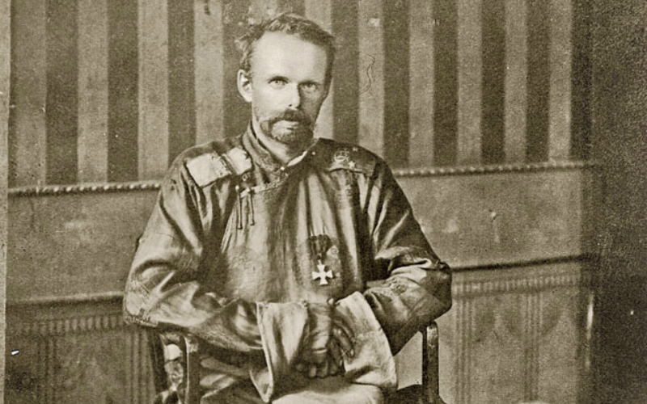

Introduction
Roman von Ungern-Sternberg was a Russian officer of Baltic German descent who gained notoriety as a military leader during the Russian Civil War and as the leader of the so-called "Ungern-Sternberg Army" in Mongolia. Known for his brutality, he became a controversial figure in Russian and Mongolian history.
Key Facts About Roman von Ungern-Sternberg
- Born in 1886 in the Russian Empire to a noble family of Baltic German descent
- Known for his role in the Russian Civil War as a leader of White Russian forces
- Led a campaign in Mongolia and declared himself the "God Emperor of Mongolia"
- Executed in 1921 after being captured by Soviet forces
Important Events in Ungern-Sternberg's Life
- 1917: Joined the White Russian forces during the Russian Civil War
- 1920: Led an army into Mongolia and declared himself the ruler of Mongolia
- 1921: Captured by the Soviet Red Army and executed for his role in the war
Learn More
For more detailed information about Roman von Ungern-Sternberg, you can visit this Wikipedia page.
